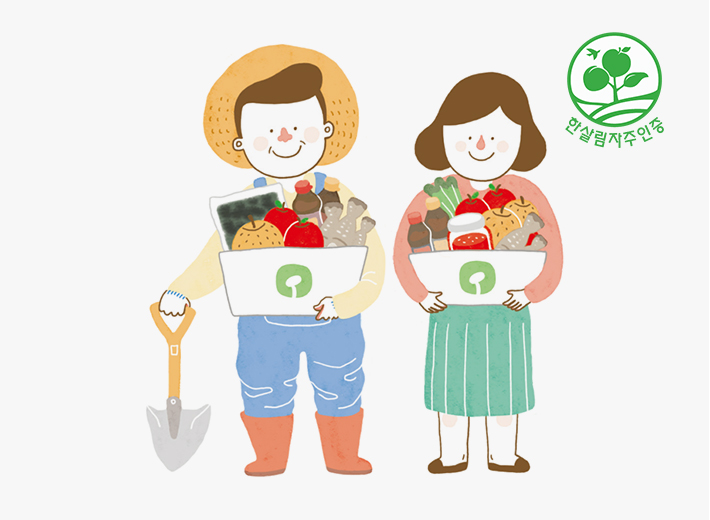
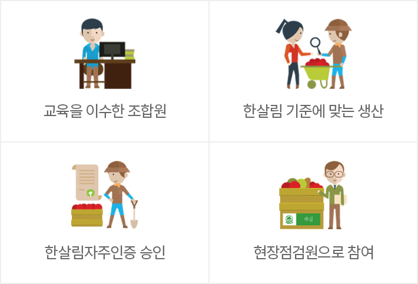

물품안전
통합검색방사능 검사
농식품 안전센터
자주인증/자주관리ㆍ점검
축산물 이력검사
2017년 01월 방사능 검사결과 불검출 80건, 검출 2건 검출 총량 4.6Bg/kg 입니다.
- 표고버섯 사각칩
- 검출, 검출 총량 : 2.3 Bq/kg
- 2017-03-27 (목)
- 전어
- 불검출
- 2017-03-27 (목)
- 황새치
- 검출, 검출 총량 : 2.3 Bq/kg
- 2017-03-27 (목)
- 시금치
- 불검출
- 2017-03-27 (목)
- 전어
- 불검출
- 2017-03-27 (목)
방사능 검사 안내
- 방사능 검사결과 전체 내역은 한살림 장보기 PC웹사이트에서 확인 가능합니다.
건강한 밥상이 더 안전 할 수 있도록, 꼼꼼이 검사합니다.
- 농축산물 분석을 위해 한살림과 한경대학교가 산학 협약하여, 한살림에서 공급되는 물품을 검사하고 있습니다.
물품을 더 큰 그릇에 더 안전하게 담습니다.
- 한살림과 한경대학교는 농축산물 분석연구를 위한 산학 협약을 체결하고, 한살림농식품분석센터를 열었습니다.
- 잔류농약 320여 성분 분석과 방사능 검사 등 독자적인 분석 시스템을 구축하여 안전성과 공신력을 높였습니다.

한살림농식품분석센터현황
| 인력 | 4명 (센터소장 1, 연구원3) |
|---|---|
| 보유장비 | 방사능핵종 분석기 / GC-M / LC-MSMS |
| 분석분야 |
|
|
|
|
한살림농식품분석센터 분석 프로세스
-
- 1단계
- 분석의뢰
-
- 2단계
- 분석센터 시료 접수
-
- 3단계
- 전처리
-
- 4단계
- 잔류농약 검사, GMO/축산물/항생제검사, 미생물/벤조피렌검사, 방사성물질/수질검사
-
- 5단계
- 분석 결과 취합
-
- 6단계
- 분석 결과 보고
-
- 7단계
- 성적 성적서 검토 및 승인 성적서 발송
-
- 8단계
- [합격] 물품공급, [불합격] 공급중단
-
- 9단계
- 검사결과 공시
한살림농식품분석센터 비전
| 1단계 (2015년) |
|
|---|---|
| 2단계 (2016년~2017년) |
|
| 3단계 (2018년) |
|
자주인증제도는 물품을 생산하고 소비하는 생산자, 조합원이 직접 참여합니다.
한살림 가치가 반영된 엄격한 기준으로 생산자와 소비자가 직접참여하여 생산과정을 고민하고 대안을 만들어가고 있습니다.
자주인증

자주인증이란?
- 조합원이 생산지를 직접 방문하여 한살림이 정한 생산기준에 따라 물품이 생산되고 있는지 확인하는 조합원 참여형 자체 인증시스템입니다
왜 시작했나요?
광부병, 멜라닌, 조류독감 등 식품안전 관련 이슈들이 점차 증가되면서 아래와 같은 이유로 자주인증을 시작하게 되었습니다.
- 1)먹거리에 관한 조합원들의 불안감해소
- 2)사회적 대응에 유연한 생산관리체계
- 3)이에 걸 맞는 한살림만의 차별화된 기준 수립
- 4)생산자와 소비자가 함께 약속하고 책임지는 관례를 높이는 시스템

구체적으로 무엇인가요?
- 일정한 교육과정을 수료한 조합원이 생산지를 직접 방문하여 한살림이 정한 생산기준에 따라 물품이 생산되고 있는지를 확인한 물품을 공급하는 조합원 참여형 자체 인증시스템 입니다.
- 생산기준을 생산자와 소비자가 약속하고, 함께 생산과정을 확인 및 공유하며 책임있는 생산소비 및 협력관계를 강화하는 시스템입니다.
국가에서 하는 인증과 어떻게 다른가요?
자주인증제도는 물품을 생산하고 소비하는 생산자, 조합원이 직접 참여하여 한살림 가치가 반영된 엄격한 자주 기준에 따라 인증이 이루어집니다.
* 한살림에서 자체적으로 운영하는 인증제도 입니다. 국가가 공인한 인증은 아닙니다.
| 구분 | 시료명 | 생산분야 |
|---|---|---|
| 인증 주체 | 국가주도 | 한살림 생산지와 한살림 조합원 |
| 인증 기관 | 관련 법령, 규칙 | 한살림 자주기준 |
| 우선 가치 | 제 3차 인증 (민간 인증 기관) | 3자 기관 참여없음 |
| 현장 심사 | 인증 기관의 심사원 | 한살림 조합원, 한살림 실무자 |
| 심사 기구 | 인증 기관 내 심의기구 | 한살림 자주관리 점검위원회 |
어떤 물품이 대상인가요?
한살림에서 농약을 사용할 수 있는 7개 품목의 과실에 대하여 자주인증 진행하고 있습니다. 사과, 배, 복숭아, 자두, 대추, 감(단감, 대봉)이며 앞으로 대상물품을 확대할 계획입니다.
자주관리ㆍ점검
함께하는 자주관리·자주점검
한살림이 취급하는 물품의 기준은 소비자들이 직접 참여해 만듭니다. 생산자와 소비자의 신뢰를 바탕으로 만든 한살림 물품은 믿을 수 있습니다.
자주관리
생산자가 스스로 물품 생산과정을 점검하고 확인합니다.

자주점검
조합원이 평소 궁금해하던 물품의 생산과정을 직접 확인 합니다.

자주점검활동 안내
- 자주점검활동 운영방법은 소속회원생협마다 다릅니다. 자세한 사항은 소속회원생협 홈페이지나 장보기 알림을 통해 받아 볼 수 있습니다.
한살림 축산물
그 안전함을 확인하세요.
한살림 축산 생산자들이
생명을 존중하며 키운
한살림 축산물 생산이력을
확인하실 수 있습니다.
이력(묶음)번호 정보조회
- L자를 포함한 묶음번호 15자리 또는 12자리 개체식별번호를 입력 또는 바코드 스캔 후 조회하세요.